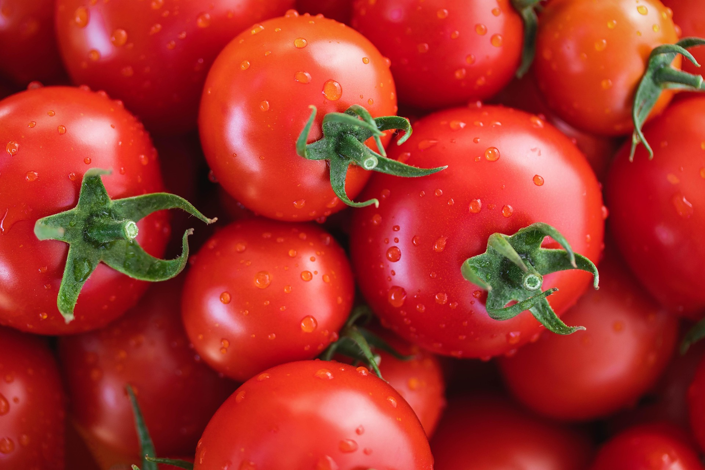
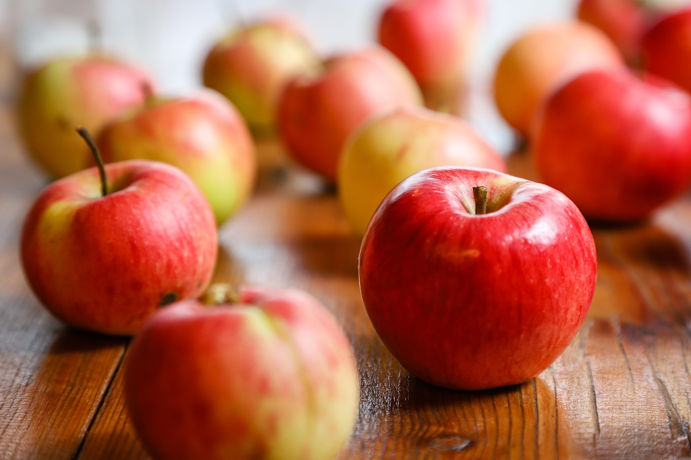
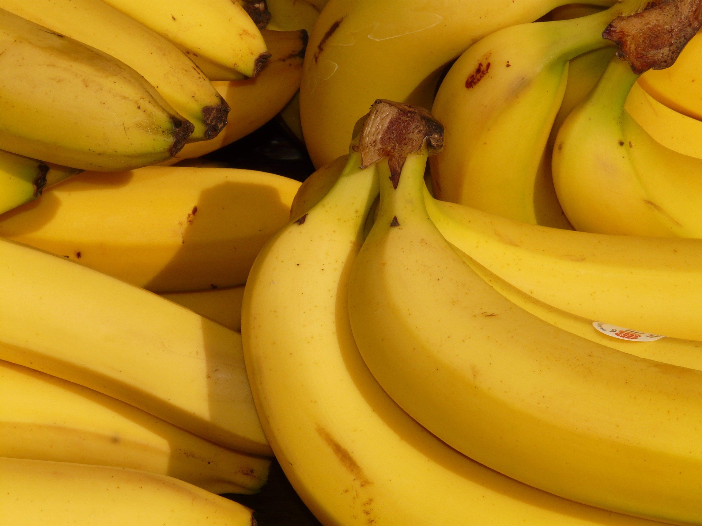

Welcome to
Fuller Fields Farms
Your trusted farm for quality crops and livestock based in Imo State, Nigeria.
About Us
A family farm built on quality, care, and consistency.
We grow seasonal crops and raise livestock with a focus on freshness, dependable supply, and straightforward service for local customers and businesses.
Every order is handled with the same attention we give the farm itself, from planting to harvest and from pasture to delivery.
Our Products
Select from a wide range of products from our farm.
Gallery
Take a look at what our farm and produce look like through the seasons.



Blog
Our thoughts on GMO (genetically modified foods) in Nigeria
Food containing GMOs has been available in Nigeria since 2019, yet the debate over the controversial agricultural technology reignited online after media influencer Chinoso Egemba posted a video boosting the benefits of GMOs.
The clip, which has garnered millions of views, sparked public debate after photos reemerged of Egemba's 2023 meeting with U.S billionaire Bill Gates.
Excerpt from africanews.com.